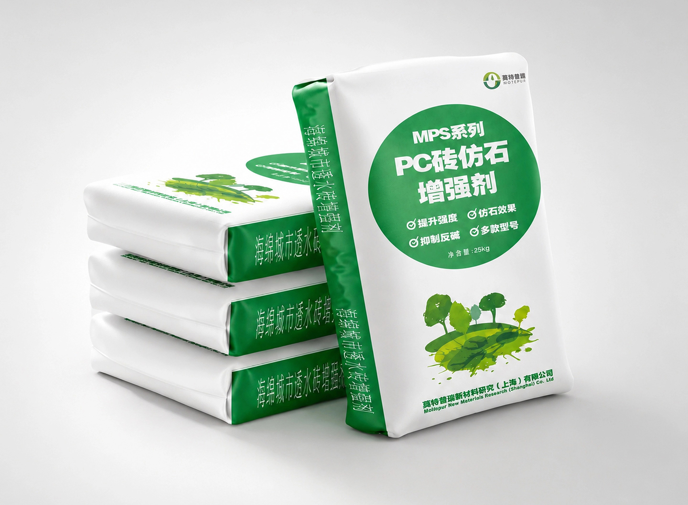
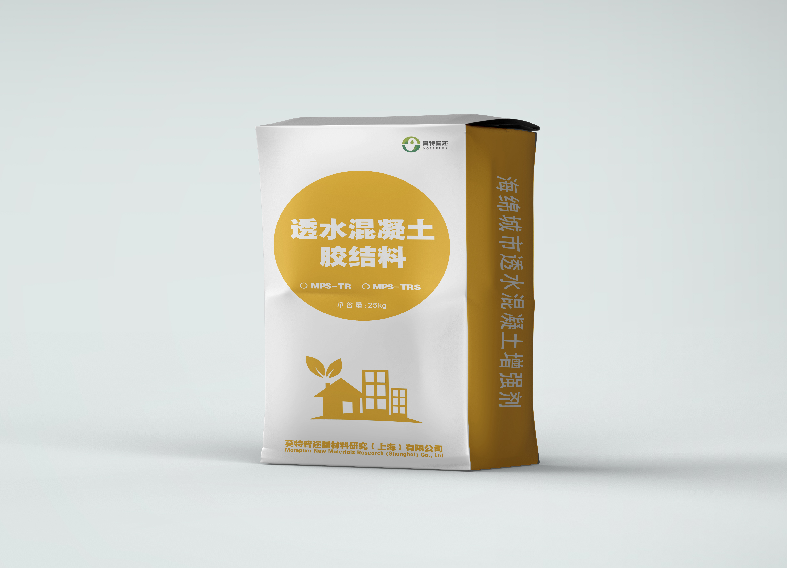
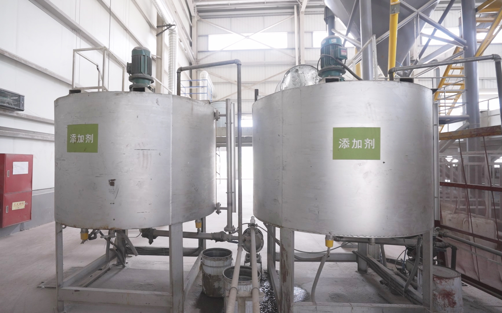

CORE PRODUCTS
核心产品体系
覆盖透水铺装全场景的材料解决方案，从预制块材到现浇路面，以技术驱动产品性能持续提升。

预制块材核心材料PC PERMEABLE BRICK ENHANCER
PC透水砖仿石增强剂
提升透水砖表面仿石质感与强度，增强耐久性与抗冻融性能，适用于高端景观铺装。
预制块材核心材料
PERMEABLE BRICK BASE ENHANCER
透水砖基层增强剂
增强透水砖基层干硬性混凝土力学性能，提升路面基础承载力与结构稳定性，延长道路使用寿命。

现浇路面核心材料PERMEABLE CONCRETE BINDER
透水混凝土胶结料
优化透水混凝土孔隙结构与力学性能，实现高透水率与高强度的完美平衡。

现浇路面核心材料SAND-BASED ADHESIVE
砂基专用胶
专为砂基透水路面研发的高性能粘结材料，赋予砂基路面优异的透水性与承载力。
 现浇路面核心材料
现浇路面核心材料
COATED SAND
覆膜砂
精选大漠原砂，表面覆膜处理工艺，提升砂粒间结合力与抗磨耗性能，适用于砂基透水铺装材料的制备与生产。